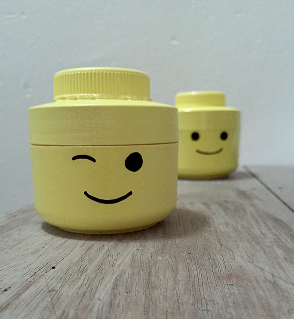

A partir de latas de crema vacías y tapas de botellas de agua (de gran diámetro) hemos hecho unas cabezas de Lego. Aquí, paso a paso:
1. Limpiar bote y tapas.
2. Pega las tapas en el centro de los botes con la pistola de pegamento.
3. Pinta lo con spray amarillo, deje que se seque.
4. Pinta con un marcador permanente las caras.
Ahora, el pequeño bote se puede usar!
He visto las cabezas de vasos de cristal en la web de : beau-coup. Me encantan. Para niños mas pequenos es preferible usar botes de crema que no sean de cristal.
